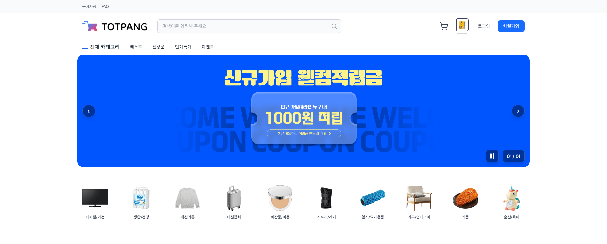
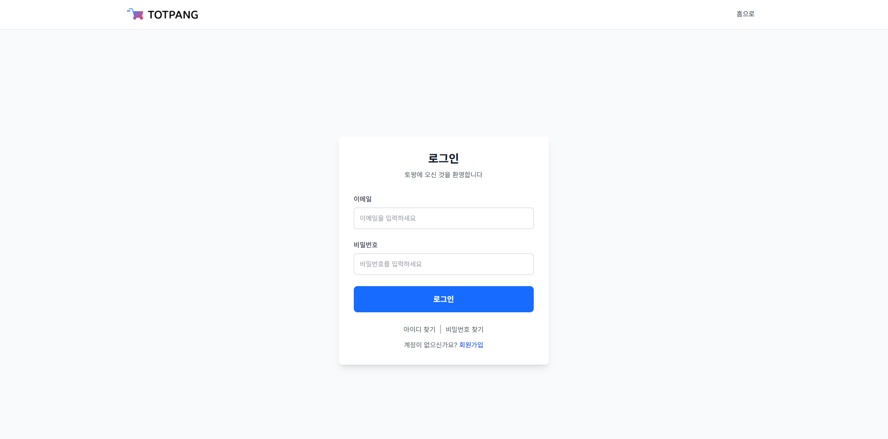
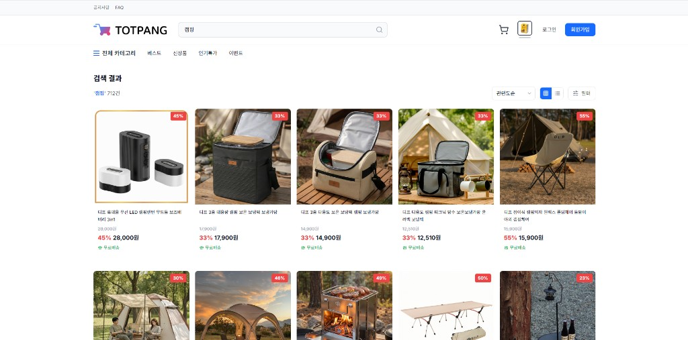
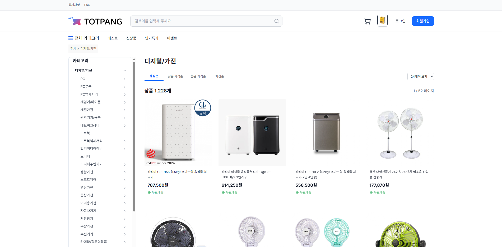

폐쇄몰 기반 쿠팡형 쇼핑 경험 제공 | 2025.12 ~ 2026.02
프로젝트 인원: 프론트엔드 2명 · 백엔드 3명
제가 담당한 역할: 이벤트 기능, 로그인 기능, 상품 검색 기능, 카테고리별 상품 조회 기능
ToTPANG은 특정 조직·회원만 접근할 수 있는 폐쇄몰 구조의 커머스 서비스로, 오픈마켓과 유사한 탐색·검색·카테고리 흐름을 제공하는 것을 목표로 했습니다.
저는 이벤트(백엔드·연동), 로그인, 상품 검색 API, 카테고리별 상품 조회를 중심으로 프론트와 맞물리는 API 설계·구현과, 검색 구간에서의 조회 성능 개선을 담당했습니다.
Redis는 JWT 블랙리스트·일부 캐시·찜/좋아요 등 상태 관리에 사용합니다.
프론트엔드는 별도 인원이 담당하며, 저는 REST API·인증 스펙을 맞추는 쪽에 집중했습니다. 운영 환경에서는 리버스 프록시 뒤에서 백엔드가 동작하는 구조입니다.
이벤트·프로모션과 연동되는 데이터 조회 및 비즈니스 로직을 구현했습니다. 다만 이벤트 전용 목록 페이지는 아직 기획상 노출되지 않아, 별도의 이벤트 화면 캡처는 없습니다. 메인 영역의 배너·내비게이션의 이벤트 진입 등과 연계될 수 있도록 API·도메인을 정리해 두었습니다.
API는 POST /api/auth/login로 두고, 요청 본문에 이메일·비밀번호를 받습니다.
브루트포스 완화를 위해 로그인 엔드포인트에는 Rate Limit(예: 5분당 요청 횟수 상한 초과 시 차단)을 걸어 두었습니다.
인증 처리는 Spring Security의 AuthenticationManager로
UsernamePasswordAuthenticationToken을 검증하는 방식입니다.
비밀번호는 BCryptPasswordEncoder로 저장·검증하고,
DaoAuthenticationProvider +
UserDetailsService 조합으로 실제 계정 조회와 권한 로딩을 맞췄습니다.
로그인 성공 시 사용자 상태(예: 활성 계정 여부)를 확인하고, 마지막 로그인 시각을 갱신합니다. 한 사용자가 여러 역할을 가질 수 있어, 역할 목록 중 우선순위가 높은 역할 하나를 골라 JWT 클레임에 반영합니다.
JWT(Access)는 이메일과 역할 정보를 담아 HS256으로 발급하고, Refresh Token은 별도로 발급해 이후
/api/auth/refresh에서 액세스 토큰을 갱신할 수 있게 했습니다.
이후 요청은 Authorization: Bearer … 헤더를 필터에서 검증·주입하고,
로그아웃 시에는 Redis에 액세스 토큰 블랙리스트를 등록하고 리프레시 토큰을 무효화하는 흐름까지 연결했습니다.
클라이언트(프론트엔드)에서는 로그인 API 성공 응답을 받은 뒤, 액세스·리프레시 토큰과 사용자 정보를 HttpOnly 쿠키 등으로 보관하는 흐름으로 붙어 있으며, 그에 맞춰 토큰 발급·갱신 API 스펙을 정리했습니다.
키워드 기반으로 대량의 상품 메타데이터(노출용 필드)를 한 번에 내려주는 검색 API를 구현했습니다. 초기에는 조인·정렬·카운트까지 한꺼번에 무거워지면서 첫 응답이 느리게 느껴지는 구간이 있었고, 이를 줄이기 위해 쿼리와 응답 구조를 단계적으로 다듬었습니다.
대분류·소분류 트리와 목록 그리드에 맞춰, 카테고리 조건·정렬·페이지 단위로 상품 목록을 일관되게 조회할 수 있도록 API를 구성했습니다. 검색과 마찬가지로 불필요한 컬럼 로드와 반복 조회가 늘지 않도록 주의했습니다.
검색 결과 화면은 단순히 “목록을 그린다”는 수준을 넘어, 매칭 건수·정렬·페이지네이션·각 카드에 필요한 가격·배지·이미지 정보까지 한 요청에 녹아 있습니다. 초기 구현에서는 이 과정에서 DB가 한 번에 처리해야 할 범위가 넓어지면서, 네트워크 이전 단계에서 이미 응답 지연의 병목이 되었습니다.
먼저 실제로 느려지는 구간이 목록 본문 조회인지, 전체 건수(count)인지, 혹은 연관 테이블을 거치는 부가 정보인지를 나누어 확인했습니다. 목록 API에서 화면에 쓰이지 않는 컬럼을 함께 읽거나, 동일 키_set에 대해 반복적으로 세부 정보를 가져오는 패턴이 있으면 응답 시간이 체감될 수 있어, 프로젝션(필요한 컬럼만 선택)과 배치 단위로 묶어 조회하는 방향으로 정리했습니다.
조건 절과 정렬에 쓰이는 컬럼은 실제 실행 계획을 보면서 인덱스가 의도대로 타는지를 점검했습니다. 검색어 매칭 방식에 따라 인덱스 활용도가 달라질 수 있어, 앞부분 일치·범위 검색 등 운영 데이터 분포에 맞는 형태로 조건을 재구성하고, 불필요한 함수 호출·암시적 형변환이 들어가지 않도록 다듬었습니다.
전체 검색 건수는 UI에 꼭 필요하지만, 목록과 동일한 무게의 조인을 그대로 실어 나르기보다 가능한 한 가벼운 경로로 분리하거나, 동일 요청 내에서라도 쿼리 구조를 단순화해 불필요한 정렬·중복 제거 비용을 줄이는 쪽을 택했습니다. 그 결과 체감상 첫 검색 결과가 화면에 도달하기까지의 로딩 시간이 눈에 띄게 짧아졌고, 이후에도 정렬·페이지 이동 시 같은 패턴이 반복되지 않도록 API 스펙을 고정해 두었습니다.
※ 구체적인 DB 제품·인덱스 정의·ORM 설정은 팀/서비스 정책상 공개하지 않으며, 위 내용은 성능 개선 시 일반적으로 적용한 원인 분리 → 실행 계획 확인 → 조회 범위 축소 흐름을 기준으로 서술했습니다.
이벤트 전용 페이지는 미구축 상태라, 메인·로그인·검색·카테고리 화면 위주로 정리했습니다.




폐쇄몰에서도 사용자 입장에서는 “빠르게 찾고, 바로 비교하고, 이어서 결제로 간다”는 흐름이 중요합니다. 로그인·검색·카테고리는 그 입구에 해당하는 기능이라, 화면과 API가 어긋나지 않게 계약(응답 스키마·에러 코드)을 맞추는 일과 함께, 검색처럼 데이터량이 한 번에 몰리는 구간에서는 쿼리를 손봐 체감 속도를 끌어올린 경험이 특히 기억에 남습니다.